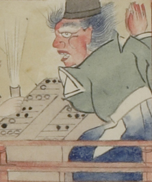

鬼を思わせる姿の男。肌は赤く、ざんばら髪をしている。眉毛が濃い。烏帽子を被り、緑色の着物に、青色に染めた袴をはいている。着物の背に白い丸飾りが２つ付いている。向いに座る長谷雄と双六を行なっている。
著作者：村田嘉言写／出典：親書誌：U426_nichibunken_0062：中納言長谷雄卿圖巻；チュウナゴンハセオキョウエマキ／日付：2007／資源識別子：U426_nichibunken_0062_0001_0001
Copyright (c)2010- International Research Center for Japanese Studies, Kyoto, Japan. All rights reserved.